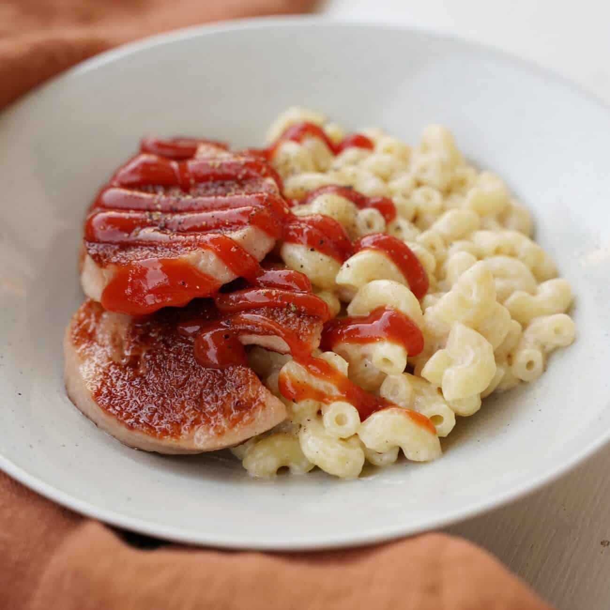

Recept > Lunch > Oscars Stuvade Makaroner

Oscars Stuvade Makaroner
Skapare: Oscarboi24
15 - 20
Medel
Enkelt, krämigt och sjukt mättande! Dags att fixa käk som inte bara är snabbt och enkelt utan också är billigt! Ingen fancy skit, bara rejäl comfort food som får dig att känna dig som en kung vid spisen.
9 kommentarer
Spara recept
Betyg: 4,3 / 5
Ingredienser
Gör så här
- 5 dl Gammaldags makaroner
- 1 liter Standard mjölk
- 1 msk Smör
- 1 tsk Salt
- 1 krm Muskot
- Värm upp mjölken i en stor kastrull tills den börjar sjuda tillsammans med saltet.
- Häll i makaronerna. Låt makaronerna sjuda försiktigt.
- Se till att röra om i makaronerna med jämna mellanrum så att det inte bränner i botten.
- Fortsätt att sjuda makaronerna i ca 25 minuter. Provsmaka för att kontrollera att dom har rätt konsistens.
- Stäng av plattan. Avsluta med att röra i smöret och muskotnöten.
Kommentarer
Fler recept

Pasta med ost- och skinksås
Betyg: 4.8/5
En god, klassisk och enkel ost- och skinksås med få ingredienser.

Snabb kebabgryta med ris
Betyg: 3.7/5
Med färdigt kebabkött, tomatsås och crème fraiche svänger du snabbt och enkelt ihop en god kebabgryta.

Korv Stroganoff med dill
Betyg: 4.3/5
En riktigt god Stroganoff med falukorv, dijonsenap, dill och små tomater.
_BroZster_
“Enkelt reseppt Bro!”
n00b12
“Vad är muskotnöt???+”
z1gmaN0w
“Blev mätt som fan Carbz4Life”
KungN
“Kungrecept!”
SkibidiSkalman
“Testade med ris, blev inte lika bra!”